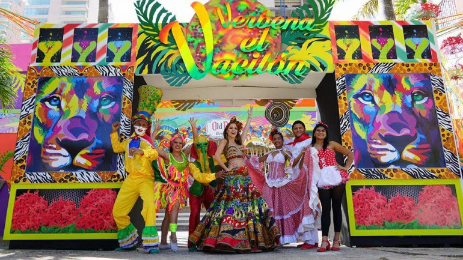
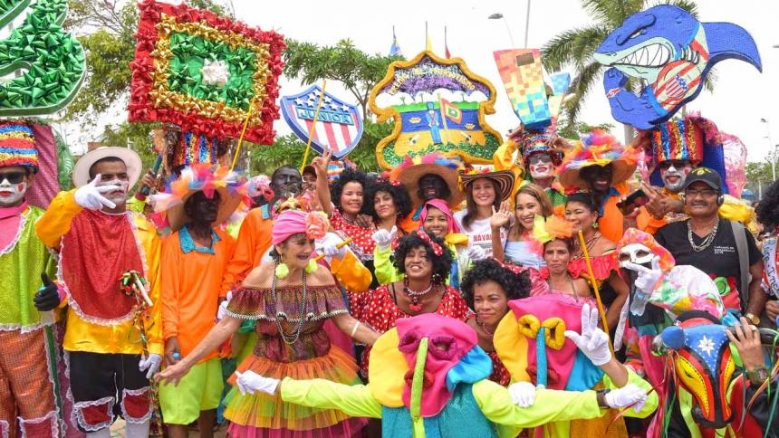

El principal escenario del carnaval es la Vía 40, avenida industrial donde se desarrollan la Batalla de Flores (sábado), la Gran Parada (domingo) y el Desfile de Tradición Folclórica (lunes). Otros escenarios son la calle 17 (Desfile del Rey Momo), la carrera 44 (guacherna, Batalla de Flores del Recuerdo), el estadio Romelio Martínez (Festival de Orquestas, Coronación de la Reina), la plaza de la Paz Juan Pablo II (Lectura del Bando), además de las verbenas que son abiertas y al aire libre y salones de baile cerrados, a los que se paga para ingresar, animados con música grabada o en vivo.
Son espacios al aire libre y abiertos al público, con la posibilidad de bailar, comer y recrearse con diferentes actividades. Se presume que las verbenas aparecieron a principios del siglo XX cuando se realizaban los asaltos amistosos a residencias. "Estos asaltos debían asumirse sin derecho a negarse ante la “elección” de la residencia como sitio de encuentro de amigos y parejas que ponían los menajes y licores necesarios para el desarrollo del jolgorio. Estos encuentros bailables carnavaleros se efectuaban en los estratos medios altos y altos y fue costumbre muy difundida hasta la aparición oficial de una programación de bailes clubes y hoteles."35 Algunas verbenas populares son:36 El Bambú, en el barrio Olaya. Polvorín, en el barrio San José. A Pleno Sol, en el barrio La Unión. La Gustadera, en el barrio Las Nieves. La Puya Loca, en el barrio Los Pinos Por su parte, han nacido nuevas propuestas de verbenas que incluyen propuestas musicales más contemporáneas como lo son: La Carnavalada, frente la Casa Moréu en el barrio Santa Ana. La Puntica (no más), en el barrio Abajo.
Fueron espacios semicerrados de entrada gratuita en los que la gente del pueblo se reunía a bailar. Su nombre provino de que la gente dejaba amarrados sus burros fuera del recinto antes de ingresar. Como un intento de rescatar esta tradición, en el Carnaval 2013 se incentivó la apropiación de este espacio como "Palacio Real" de la Reina del Carnaval.
